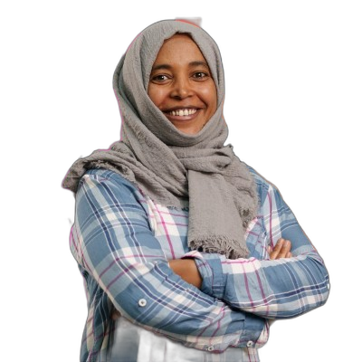

10+ years of testing complex software by investigating risk, questioning assumptions, and learning from the product in front of me — with automation used to extend human exploration, not replace it.
I treat testing as an empirical investigation. The product, risks, time, people, technology, and business consequences shape what I test, how deeply I test it, and what evidence is worth collecting.

I'm a Senior Software Test Engineer with 10+ years of experience investigating enterprise and customer-facing software across eCommerce, FinTech, ERP, SaaS, remittance, lending, messaging, and AI-driven applications.
My testing starts with context and questions, not a predetermined checklist — the right approach for a payment API is rarely the right approach for a marketing page. I care about risks that can actually hurt users or the business, not about producing the largest number of test cases. How I get there is its own section, below.
Automation is part of that strategy. I build maintainable Playwright, Cypress, Selenium, API, and performance tooling to handle repeatable checks, generate useful signals, and free human attention for exploration. AI tools can accelerate the mechanics; testing judgment remains mine.
My tools change with the problem. The durable skills are modeling, questioning, exploration, risk analysis, observation, evidence, and clear communication.
I don't measure testing by the number of scripts executed. I ask whether the investigation is revealing information that matters to the people who must make the release decision.
Understand the product, users, architecture, business stakes, constraints, and current changes before deciding what deserves attention.
Generate and pursue questions. Vary data, timing, state, roles, dependencies, and boundaries. Follow surprises instead of forcing reality back into the plan.
Use logs, APIs, databases, network traces, source code, product behavior, and conversations as testing evidence.
Automate checks that benefit from repeatability and speed. Keep human attention available for ambiguity, discovery, modeling, and judgment.
Explain what happened, why it matters, what is affected, how confident I am, and what I recommend — so stakeholders can make informed decisions.
Every observation changes the model. Good testing is an ongoing process of learning about the product and refining the investigation.
A cross-section of the systems I've investigated — looking beyond happy paths to failure modes, system behavior, integration boundaries, authorization, data integrity, and the risks that emerge from real-world use.
Customer engagement platform with WhatsApp Business API integration — template messaging, 24-hour conversation windows, and agent-assisted support.
Cross-border remittance platform moving money from abroad into Kenya, with identity verification and real-time transaction updates.
End-to-end QA across a React storefront and backend middleware, from product catalog to checkout.
Multi-tenant SaaS marketplace enabling rapid tenant onboarding, customization, and secure access management.
Mobile-based micro-credit platform issuing instant loans, with an admin portal for onboarding and compliance.
Large-scale, multi-module ERP system covering HR, Finance, and Asset Management for a national utility.
The environments changed — ERP, FinTech, SaaS, messaging, lending, remittance. The thread stayed the same: understand the context, identify meaningful risks, investigate with purpose, and communicate what the evidence actually tells us.
10+ years across FinTech, ERP, SaaS, eCommerce, messaging, lending, and remittance — combining exploratory investigation with automation, API analysis, data inspection, and risk-focused reporting.
Open to Senior QA / Automation roles where thoughtful testing matters — remote or Addis Ababa-based. I bring context-driven exploration, strong technical investigation, and automation that supports good testing rather than pretending to replace it.